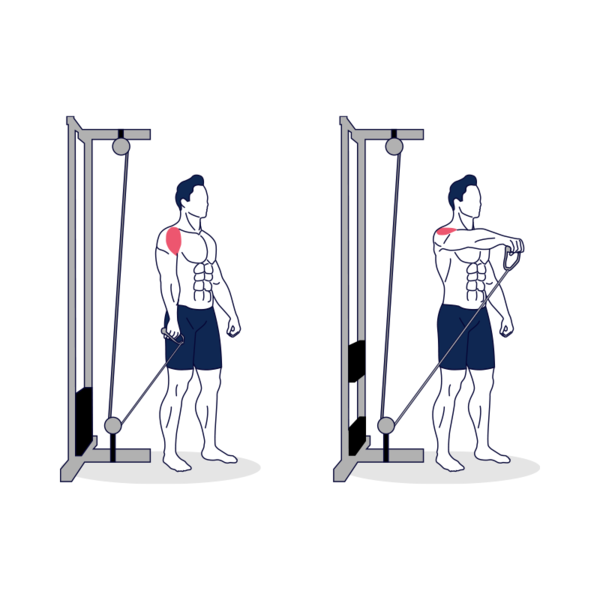

ELEVACIONES CON CABLE

Manteniendo el codo ligeramente flexionado, levanta lentamente el brazo hacia delante haciendo un arco. Una vez que el brazo esté paralelo al suelo aprieta brevemente los hombros, y luego vuelve lentamente a la posición inicial. Haz el número de repeticiones deseadas.
Musculos: Deltoides anteriores
Rutina: 3-5 series con 10-15 repeticiones y un descanso de 3 a 5 mn
EXTENSIONES DE CODO
Extender los antebrazos hasta que los brazos estén completamente extendidos. En esta posición, contrae tus tríceps durante un momento y luego vuelve lentamente a la posición inicial. Mantén los codos cerca del cuerpo durante todo el movimiento.
Musculos: Tríceps
Rutina: 3-5 series con 10-15 repeticiones y un descanso de 3 a 5 mn
FONDOS

Mientras mantienes los codos metidos, flexiónalos lentamente hasta que formen un ángulo de 90º. A continuación, vuelve lentamente a la posición inicial y aprieta los tríceps en la parte superior. Mantén la espalda recta durante todo el movimiento. Haz el número de repeticiones deseadas.
Musculos: Tríceps y deltoides anterior
Rutina: 3-5 series con 10-15 repeticiones y un descanso de 3 a 5 mn
PRESS BANCA
Acostado en el banco, con los pies en el suelo. Agarra la barra con un agarre más amplio que el ancho de los hombros. Tus antebrazos deben estar perpendiculares al suelo.
Musculos: pectorales, tríceps y deltoides anteriores
Rutina: 2-5 series con 5-10 repeticiones y un descanso de 3 a 5 mn
PRESS MILITAR SENTADO

Siéntate en el banco y desengancha la barra cogiéndola con un agarre en pronación y los codos apuntando hacia fuera. La barra se coloca por delante a la altura de la barbilla. Este nivel puede variar en función de la flexibilidad de tus hombros. La distancia entre las manos debe ser tal que los codos formen un ángulo de 90° cuando los brazos estén paralelos al suelo.
Musculos: Dorsal, el pectoral mayor y el bíceps braquial.
Rutina: 2-5 series con 5-10 repeticiones y un descanso de 3 a 5 mn
APERTURAS CON MANCUERNAS
Tumbado en el banco, con los pies en el suelo, una mancuerna en cada mano. Sujeta las pesas con un agarre neutral, con los brazos extendidos sobre el pecho.
Musculos: pectorales y deltoides anteriores
Rutina: 2-5 series con 5-10 repeticiones y un descanso de 3 a 5 mn